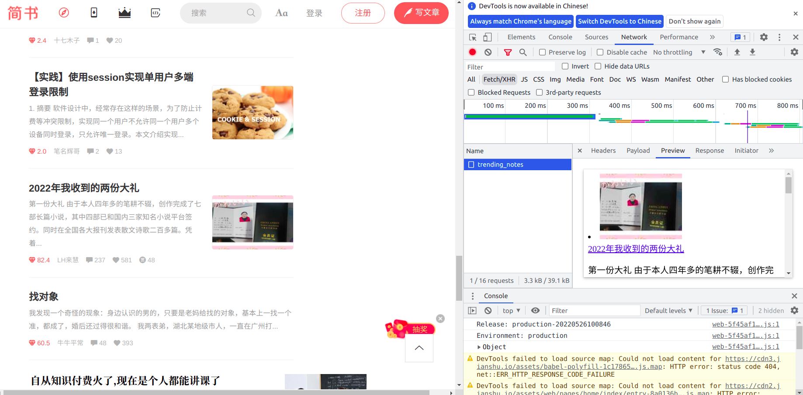
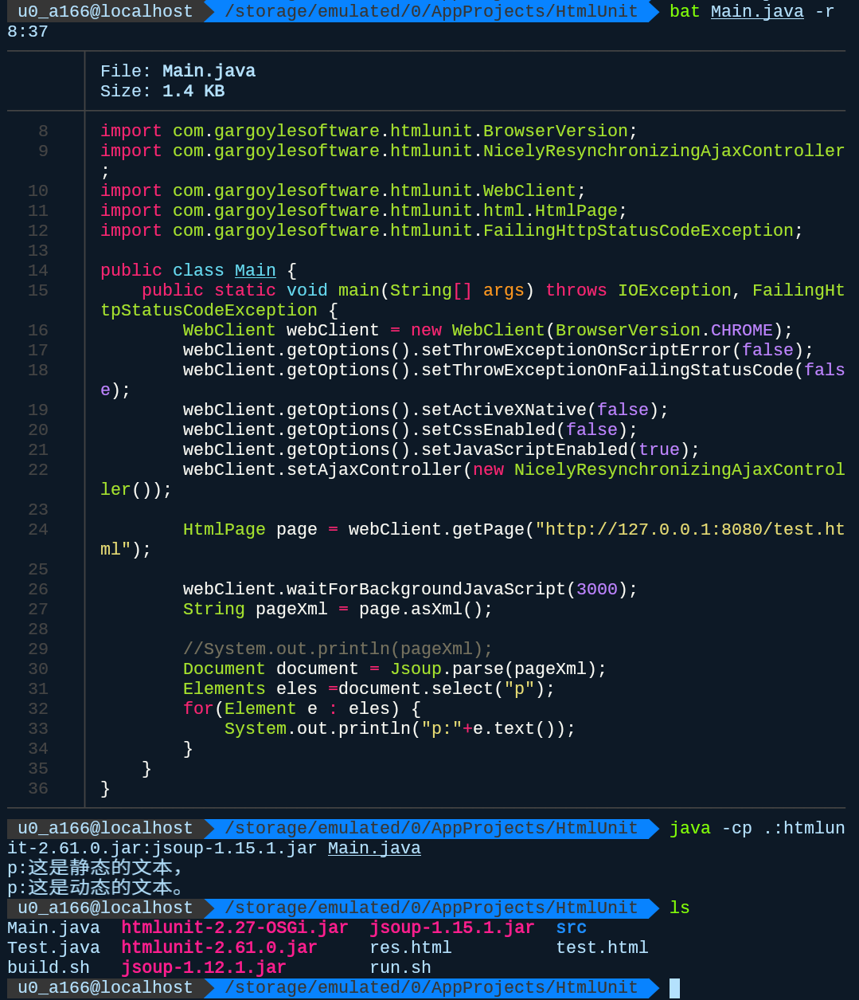

网络爬虫
网络爬虫，想必大多数人或多或少都有听过，但爬虫真的有那么神奇吗？真得随随便便就可以得到大量数据吗？今天，我将从开发者的角度来深入讲解爬虫的基本思想，可不是那种，一个软件加输几个参数就轻易得到数据那么简单的东西。
爬虫的基本原理
做任何事前，我都会研究其原理，并探究其可能性，搞爬虫也是一样的。首先爬虫是干什么的，做了一件什么事情？在网络上自动化数据采集。我这里所给的限定词一个也不能少，比如本地的数据采集也是存在的
这里我们通过tree指令得到采集当前文件夹内所有的文件，并将结果保存到data文件内，这样我们就实现了一次自动化的数据采集。关于本地的数据采集，其实我以前特别喜欢玩，主要为了更好的辅助我进行文件管理，比如下面这个
作用是在特定的文件夹内的所有可读文件中查找相应字段，为什么会有这个玩意？主要还是因为以前没有电脑，唯一的开发工具就是手机了，手机上的IDA功能不是很强大，比如我引用了某个开源库的某个函数，但我想知道这个函数是怎么实现的，就需要找到它的实现在哪？开发都是遵循多文件管理的，一个文件一个文件点开查找的话是不太现实的，所以就自己搞了自动查找器，想想以前的说干就干的能力还真强，现在遇到问题首先想的就是有没有现成的工具，说着还真是惭愧。回到正题，本地的数据话采集与爬虫的区别在于，文件结构的可知性，在此之前我们要明确一点，互联网的本质就是数据的传输，上网实际就是下载文件，只不过格式千奇百怪罢了，比如网页其实就是一个html文件。互联网也本地的不同在于，本地资源以树的形式存储，而网络资源则以图的形式存储，说直白点就是本地文件可以很轻松地遍历，但网络却不行，必需依靠链接互相跳转，比如我们要依靠搜索引擎来跳转到其它网站，我们在不知道网址的情况下不可能随便就找到某个网站。所以爬虫有一个重要的任务就是从当前页面找到有用的链接从而进行更深一步的数据爬取。
爬虫的另一个重点是自动化，其实数据爬取也可以人工完成，一页一页的浏览，一页一页的复制，这种事情也不是没有干过，比如写什么感受的时候，如果只是需求少量数据的话，其实也没必要搞什么爬虫，不仅累还要与反爬虫博弈。你说不能复制的情况？暂不论资源在本地的性质，就来说说不能复制是怎么实现的，其实就是javascript脚本的原因，在浏览器浏览网站的时候，三个部分是组成网页的基础，html、css和javascript，前两者是完全静态的，到手了就是自己的可以随便玩弄，而js脚本则对浏览器的行为进行脚本控制，从而实现一些交互功能，比如拦截你的复制操作，换句话说拦截你复制操作的不是人家网站，而是人家官网通过js脚本告诉你的浏览器拦截复制操作，即然这样就好说了。拿我比较讨厌的一个网站举例，就是下面这个
真令人不爽，我复制几个字还要我交钱，想的美啊，我自己都可以把它手动打出来，其实还有个有趣的想法就是，将内容进行截屏，然后通过文字识别系统转化为文本。当然我们可是深知原理的开发者，所以我们直接禁用javascript脚本，像这样
然后嘛！复制变成了原生的样子
也就可以轻而易举的复制到数据了，当然禁止js并不是好办法，修改js才是更牛的方法，使用浏览器的开发者工具箱就可以实现，但还有更聪明的办法就是利用油猴脚本，不过有一定风险就是了，在使用前仔细看脚本源码是有必要的，不过我并不当心安全问题，因为我一般会用两个浏览器，一个原生的，一个开发的，高风险在前一个浏览器中进行，搞技术在另一个中完成。比如CSDN上的代码，我还是利用别人的脚本实现的

保留js的运行时有必要的，因为有些网站js的话，显示可能会不完整，而且js还能实现广告过滤等更多功能，何乐不为呢！
爬虫是网络上自动化的数据采集工具，而其实现的可能就是我们的网络协议了，http俗称超文本传输协议，所谓的网站浏览实际上就是将远端的超文本下载下来并在本地展示，通过浏览器的开发者工具箱，我们可以轻易看到我们下载下来的网站源码
也就是说网页实际是在本地的，网页上的文字自然可以轻易的获得了，与我们不同的是，我们看到的是网页渲染后的结果，而机器看到的是网页的源码，所以从源码中提取相关信息也是爬虫的一项重要技术。当然仅仅得到一个页面的信息还是不够的，我们还需要自动得找到下一个可爬取的页面，其包含在一些的html标签中，比如下面这些
当然跳转中还可能有许多我们可以不需要的链接，比如回到主页之类的，进行过滤也是一项重要的技术。
说这么多其实，我们只想表明一点，因为文件在本地，所以爬虫是理论上一定可行的，就算单存的只是看到，我们也可以通过截屏，然后进行文字识别来达到目的。理论的东西其实并不多，只要知道网络的本质是文件传输就够了，接下来还是举几个例子，来体会一下爬虫的实在感吧。
一个旧例
其实我很久以前就写过爬虫，比如下面这个例子

使用java实现的爬虫，其实现在我用java已经比较少了，但java作为我学过的第一门面向对象的语言还是值得怀念的，第一门编程语言的话应该是javascript，在以前手机版的minecraft可以通过js脚本来实现模组的功能，那可能是我第一次编程了，现在都还有存根呢
以前对开发没什么感觉，还用中文来当变量名，但不提倡这么做，因为这样会出现编码问题。java则代表了我以前的野心，以前我并没有电脑，但不知什么时候，知道了AIDE这个手机上的开发神器，它能用于安卓开发，当时安卓开发主流使用的就是java，我自然也学习了这门语言，当然如今早以不是以前那个人均极客的时代了，很多安卓神器都没人维护了，现在很多开发者也变得懒惰了，大量使用框架，不断扩大软件体积，但很多功能压根就不需要，而我又什么都改变不了。
扯远了，我们还是回到正题吧，要了解爬虫爬了什么，我们要先看看这个网站有什么
这是一个轻小说网站，对于小说的每一个章节都有一个页面进行存储
我们的目的很明确，就是将小说的所有章节内容都爬取下来，并保存在一个文件里，我将依照代码，一步步将爬取的过程进行还原
1 | import java.io.File; |
首先是整体框架，url表示要爬取目标的地址，toStr表示我们存储的位置，number表示爬取的章节数，这里我们使用了一个外部库jsoup，这是一个实现http请求的无非原生依赖的java库，java原生只能实现tcp和udp请求，所以我们引用了一个简单的外部库来减少工作量。createTxtDoc创建好我们的文件，addContent则开始向文件中写爬取内容
1 | private static void addContent(String urlT, File txtFile, int numberT) throws IOException, InterruptedException { |
appendTxt向文件添加内容的封装，是io的基本操作了，实现就不讲了，这里getPageBase和getPageContent是我们的核心方法，前者负责在首页获取小说的基本信息，后者则提取小说的具体内容，在实现后者的时候，有一个ui地址替换的过程，这实际上是偷了一个懒。在对地址研究的时候，我们发现
只要在原有的地址上添上一个数字，就可以得到对应章节的地址，所以我们直接for循环遍历这些url地址即可。但实际操作的话，不应该如此，而应该利用首页中的下面这些地址
不过嘛！少费些精力总规是好的，上面都只是框架，接下来的才是重点，页面的解析部分，首先是首页信息
1 | private static String getPageBase(String url) throws IOException { |
Jsoup.connect(url).get()很好理解，就是根据url地址，获取到相应的html数据，保存到Document对象中，并非直接的String数据，实际上因为网页的格式基本是固定的，所以Jsoup库就顺便实现了更多功能，将html内部的结构也组织起来，从而形成了document，这其实和javascript里的DOM操作是一样的，简单来说就是结构化的数据比流数据更好操作。使用结构化的数据，我们获取相应标签的内容也会简单很多，如果是非结构化数据的话，就可能需要像下面这样的模式匹配的查找算法
这是一个用python爬图片的例子，respone.txt是网页的字符数据，我们则是通过正则表达式提取里面的图片链接。doc对象的select方法是用XPath方式来寻找相应的标签，内容存储为Elements，XPath语法实际和css中标签选取是一样的，目的是定位相应的元素，当然数量不止一个，所以有s结尾。通过网站的源码
我们可以发现class="novel_title"表示小说名，所以用.novel_title进行匹配，class="novel_writername"表示作者名，所以用div.novel_writername匹配，值得注意的是，全页面中class等于novel_writername只有这一处，所以前面的div不要也是可以的，可能我以前懂得不多，所以就写成这样了，后面都是同理的，没什么好说的。通过Elements的text()方法即可将里面的内容提取出来，最终保存在rtn里，用于写入文件。仔细一看也没啥嘛！接下来的小说内容就更暴力了
1 | private static String getPageContent(String url) throws IOException { |
为什么会有一堆的replace，只能说当时的自己还不够成熟吧，来看看源码怎么样
我们使用匹配式div#novel_honbun p表示id等于novel_honbun的div标签内的所有p标签，但我们注意到p标签内参杂着br标签，这是一个换行标签，如果单纯提取text()的话，会把换行给忽略掉，导致文章一行到底，但如果html()提取内容的话，br标签会以web形态保留下来，所以我们需要将br标签replace成换行。至于有关rb和rt的替换，目前我不知去哪找例子，但以前确实遇到过，这实际是给日语汉字注假名音用的，总之知道有这么一回事就行了。大体内容其实也没什么
程序也确实在稳健地运行着
至于有时候冒出一个失败，也不要紧，懂得都懂，访问外网嘛！难免会有些卡。而且在代码里我们也加了等待再请求的过程，后面也可以看到第四章还是请求成功了。我们也可以看看最后的结果
十分成功地得到了我们想要的内容。
验证问题
当然实际搞爬虫的时候并不会如此的一帆风顺，有些东西是比较好解决的，比如就前面的这个例子，注意到有这么一句话Jsoup.connect(url).cookie("over18","yes").get();，多了一个cookie，实际就是给http请求添加了cookies信息，cookie以键值对的方式存储在本地，但对于普通用户而言操作cookie依赖于官网提供的js脚本，上面这个例子只是相当于添加了参数，我们举一个比较复杂的例子来理解cookie的作用。方便起见，接下来我们全程使用wget，wget是一个下载工具，依照我们之前的分析，下载页面其实已经完成了爬虫的一大半了，而cookie主要影响的也是页面请求的时候。
这是在请求一个下载页面，但是因为没有登入，导致服务器将请求重定向到了登入界面，获取到了错误的结果。这里，我们稍微补充点课外知识，所谓的http请求实际是通过tcp协议向服务器发送一段数据，我们可以通过抓包程序看到这段数据
而我们的这次请求实际有两次重定向(代码302)，一次是http协议定向到https协议，另一次是下载请求重定向到登入界面，总共请求了三次
我们知道tcp协议具有可操作性，我们看到http请求并不单单只是一个url地址，还包含了很多其它信息，服务端实际上可以通过这些信息来灵活地返回不同的信息。不过在通用的互联网http协议中，用户的输入其实只有两个部分，一个是在请求地址的末尾通过?来添加参数，百度搜索就是一个很好的例子
wd表示参数的名称，=后面表示参数的具体内容，在这里wd表示搜索的关键字参数，在这里我们传入http表示搜索http关键词。另一种用户的输入就是cookie了，不过这个东西一般由网站提供的脚本来进行控制，但我们也是有控制的权利的。回到我们之前的例子，我们在这个网站上登入，然后抓包，得到以下数据
在请求头中有Cookie的数据，Cookie也是以k-v键值对的方式存储数据并以分号进行区别，在这个例子中，cookie有globaluid、ASP.NET_SessionId、.ASPXAUTH这三组数据，可以看到服务器使用的是asp，asp是一个动态页面服务，具体内容就不说了，但这也意味着.ASPXAUTH应该是没用的cookie，属于asp自动生成的玩意。关键其实在于前两个cookie，这里可以稍微讲讲网站是如何实现用户登入的，当用户登入以后，服务器会动态生成一个id数据返回给用户，而以后用户就可以凭借此id数据来表明自己的身份，重而再次访问网站的时候就可以不用再登入，当然一般情况下，服务器会维持这张id表，表明什么时候这个id表到期，这也是网站登入一般有个一个月或一周免登入之类的，当然为了保证安全，一般情况下每一批登入生成的id可能会有所不同。总之，我们可以评价此id达到在此站点的免登访问，jsoup可以通过cookie实现添加cookie信息，wget也可以做到，像下面这样
通过--header给wget请求传入cookie参数，参数的具体值则使用我们刚才抓包到的内容，我们可以看到请求确实成功了，其实这个下载的过程也有些可圈可点的东西。在这里请求过程发生了两次重定向，经过仔细的研究，我们发现，这个网站将具体的文件存储到了阿里云的对象存储服务中，其地址是files.haolizi.net，而在中间使用了一个虚拟的文件地址file01.haolizi.net，这实际涉及浏览器跨域访问的问题，虚拟地址与原域名处于同一个地址下，当成功完成一次下载请求的时候，服务器会动态生成一组logid和token来表示你拥有权限来下载此文件，并定位到文件具体存储的位置，这显然是为了防止我们直接从文件地址来爬取相应文件数据的对策。
其实还有一种可控输入是POST请求，在浏览器里基本不能构造，而在有些客户端里倒是可能出现，比如这是一个游戏登入过程的抓包数据
当然过程中其实有好几个http请求，这个是游戏更新检查请求。当然只有比较老的游戏，才会像这样直接使用http请求，还不做任何加密，与一般的GET请求其实差别也不大，就是在请求头的基础上多了一个请求数据体，而且可以是数据流的格式，灵活性比上面两者高多了，虽说POST也是http协议的一部分，但大多数网站基本用不到就是了。
动态数据
爬虫还可能遇到的一个问题就是动态数据，这是个十分棘手的问题，我们还是来看一些实例吧。
首先是页面的异步加载技术AJAX，即在一次请求的时候，数据没有完全的传过来，需要通过阅读更多的方式来进一步获得数据，比如下面这个
异步加载基础技术是依赖于js脚本里的XMLHttpRequest(XHR)对象，其本质相当于进行了一次http请求，并通过js脚本渲染到页面上
也就是说，我们其实可以不通过js脚本，而通过不同的http请求来近似实现阅读更多的点击事件
1 | import requests as req |
值得注意的是，在这个例子中，我们加了一个比较复杂的请求头，因为我们发现如果不对请求头添任何参数的话，会返回403代码表示资源不可访问，可能是服务端根据请求头信息将我们判定为机器人了，所以我们只能修改请求头，使其模拟浏览器尽可能像一些，这个请求头怎么获得呢？通过开发者工具箱即可
代码最终顺利地运行了，可喜可贺

异步加载其实属于动态资源中比较简单的一部分，我们使用模拟POST请求的方式即可解决，比较困难的其实是通过js的DOM API来实现的动态页面加载，由于网上的情况比较复杂，所以我们自己写一个例子来进行讲解会比较方便
同时我们在本地开启一个简易的服务器来模拟网站的情况，先看看一般地获取情况
你可能会说，在代码里不是有p标签吗？首先啊，我们这里只是举例子，实际开发的时候，数据肯定不会这么露骨，其次，那就是机器可没这么智能，我们可以马上模拟给你看
可以看到jsoup只匹配了确实存在的p标签。在这种情况下，我们需要进行浏览器的模拟库，htmlunit是java下的一个无渲染浏览器，实现的话并不复杂，将htmlunit执行js脚本后的页面数据传给jsoup解析即可，直接看代码，至于原理嘛！看到这里应该大概都懂了
总之，我们确实获得到了动态的数据。一般情况下，我们不推荐使用htmlunit来模拟浏览器，它只有java版本，属于静态语言，每次运行都要重新编译，对于模拟浏览器这种交互情景并不合适，现在常用的模拟器是Selenium，这是一个强有力的Web自动化工具，有各种语言的版本，我们首选python版来进行探究，因为python动态语言的特性，使我们可以十分便捷地动态监控数据和调试程序

实际使用的话，就会发现，所谓的Selenium其实就是开发者工具箱的一个脚本版本，而且Selenium在使用的时候需要相应的浏览器内核，不像htmlunit自带解析内核。selenium实际上就相当于你使用脚本来控制浏览器，通过脚本来获取页面信息，通过脚本来控制页面行为，而且还能开一个窗口来看一下当前的渲染效果。对了，如果直接向微博发送http请求，实际得到的是一个脚本
里面主要进行一些判断，并给予你用于访问的一些参数，然后重定向，实现基于js实现的而不是http，所以静态请求页面只能走到这一步，使用selenium进行浏览器模拟来执行js，则可以获得重定向后的内容。其实selenium还可以当浏览器来用，它提供的这个窗口界面有浏览器的大部分功能，当然实现靠得还是我们下载的浏览器驱动。selenium具体咋用也没什么好说的，总之，我们能清楚一点，在爬虫的数据获取上，selenium的熟练使用相当于最高境界了，有了selenium，就算数据动态存储于内存中，我们也可以轻而易举地得到，只要数据在我们手上，不论是静态页面，还是内存中的动态数据，我们总有得到它们的办法。所以，理论上对于爬虫而言，所见即所得，请记住这点。
爬虫框架
爬虫框架，其实我并不是很喜欢，也不想说太多，比如比较著名的框架scrapy。它可以干啥呢？创建爬虫的工程、对爬虫进行配置、提供爬虫的流程框架、提供一些基础的请求API等等，总得来说，scrapy相当于为你提供了一整套的爬虫服务，连网页文件下载的API都包含在了里面，如果做爬虫用这种功能丰富的框架确实很方便，也无可厚非。但我的厌恶感，来自于现实应用，我不喜欢功能丰富的框架，现在许多在手机上运行的应用，基本都是用Web框架开发的，原生应用基本已经没几个了，Web开发框架好吗？确实很好，十分容易跨平台，十分容易开发(直接前后端合并)，而且还能以小程序的形态嵌入到各种应用中去。但是这些都是有代价的，比如一个流传的笑话，每个人的手机里有好几个electron，好几个node，这是因为安卓手机应用的安装机制，大多Web框架的库文件，基本都是打包在应用中，不可能进入系统中，所以如果好几个应用都基于这些框架开发，就会让手机重复持有好几个框架。当然这些都不是大问题，问题这些框架开发的应用用起来是真的不舒服，总是莫名其妙地一片空白，不知道是在请求数据，还是卡了，还是运行异常，而且我还发现，明明都是一些很简单的页面，没有很复杂的渲染，在我这个还比较新的手机上，运行竟然还会卡顿，如果用原生环境实现更复杂的渲染效果，在老的手机上运行都还可以十分流畅。Web应用还有一点是不断生孩子的库依赖，为了一个函数，需要引入一个库，一个库还不够，还得把库的依赖一起引进来，如此反复，直到原生的node，C/C++有一个强大的预处理机制，可以依照不同情况来选择性的编译代码，所有即使C/C++开发程序时中间文件内存比较大，但最后的文件反而都比较小，比如我很喜欢的一个游戏引擎cocos2dx，最后编译的库文件就20M左右，这么说来，也不知道为什么cocos2dx本来的原生环境明明挺好的，但现在维护团队也放弃掉了，开始维护基本Web的cocosCreator，想当年cocos2dx也是占据市场的一大主体。
感觉说太多都偏离我们的主题了，总之，scrapy功能强大，使用方便，但我真的不太喜欢，傻傻地接受帮助，被别人拿捏。爬虫就到此为止吧。